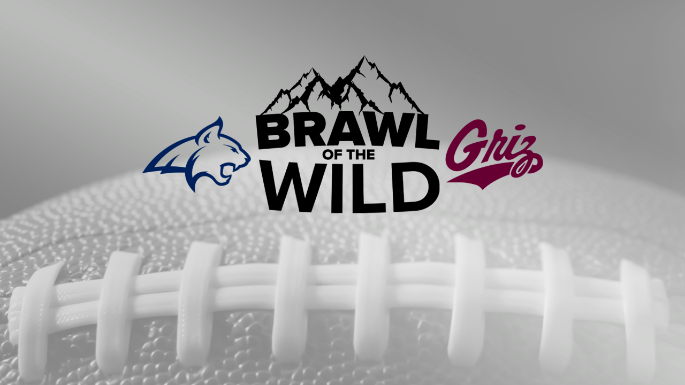

The Brawl of the Wild
What is the Brawl of the Wild?
The Montana-Montana State football rivalry is an annual college football rivalry game between the University of Montana Grizzlies and the Montana State University Bobcats. The game is most historically and commonly known as the Cat-Griz game, and sometimes as the Griz-Cat game. Since 1997, the match has been advertised as the Brawl of the Wild. The winner receives the massive Great Divide Trophy, as the universities are on opposite sides of the continental divide. The rivalry began in 1897, making it the 31st-oldest in NCAA Division I and the eleventh-oldest west of the Mississippi River. It is also the fourth-oldest Football Championship Subdivision rivalry. Since 1993, the match-up has been the final game of the season for both teams, and has often had implications for the Big Sky Conference championship and its automatic bid to the NCAA Division I Football Championship playoffs. Previously, it was usually played in late October or early November.
Current Record
When Montana and Montana State met in 2022, it marked The Brawl of the Wild's 121st all-time meeting. Montana State crushed Montana State 55-21 with ESPN's College GameDay in attendance. The Grizzlies hold a 74-42-5 head-to-head edge in the all-time series.